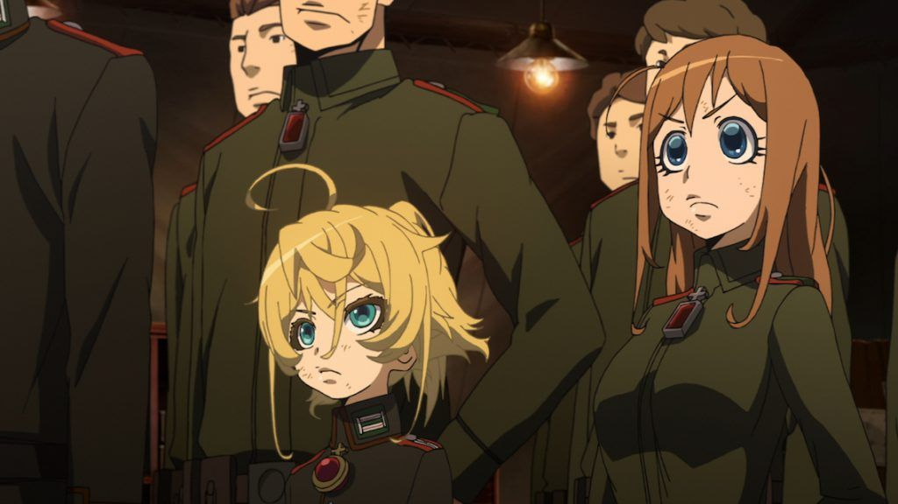

In a year with few other anime standouts, "Saga of Tanya the Evil" stood as one of the more interesting series of 2017. It took the "isekai" trend (where a modern-day Japanese teenager is transported to live in some alternate fantasy world) and flipped it on it's head. Also based on a successful light novel series with incredible cover illustrations, it poses some thematic simularities to "Overlord," published by the same company (despite a similar visual style, the illustrators are different).Set in some alternate version of the early 20th century, a massive war between soldiers is fought, with the lead commander of one side being a nine-year old child, ruthless and cunning, "a monster in the body of the little girl." The second episode reveals her true backstory: in modern Japan, he was a pragmatic adult charged with firing poor-performing staff of his company. Simply following orders, he takes no responsibility, doing as he's told to retain good standing with his superiors, ensuring job security and a peaceful life. He doesn't forsee that one angry ex-employee would throw him under the bus... or rather, a subway train... in rage. At his death, the man hears the voice of God, criticising him for his lack of empathy. Refusing to believe in God even after hearing his voice, the man refers to him as "Being X," further angering God. To teach the man a lesson, he will be reincarnated into a world of violence. Thus, Tanya is born in an alternate world timeline, where something simular to World War I or II is about to take place, with alternate country names and factions (her home appears to take after Germany, with a bit of the Soviet Union). Also, magic exists in some form among a select few born with it, and soldiers use equipment to harness it, allowing some to fly with one-legged jetpacks or air-ski's, while the rest fight on the ground with rifles and tanks. This era was considered to be Hell on Earth, as close as recent humanity had ever experienced, and not a great era to be reborn into. Unbeknowst to the others, Tanya remembers her previous life, and retains her hatred for "Being X" (be he God, the Devil, or something else), and remains as pragmatic as ever. With some magic power herself, she decides not to wait to grow up and let life play out as destiny determines it, and instead volunteers for the army as a child, with the intent to rise up in the ranks quickly and early in life, to enjoy the long remainder of her life at the top instead of the bottom. She follows orders without question, completing them without excuses, in order to satisfy her superiors and gain promotions. As a commander of a small force, she saves lives of her men where possible not out of concern, but for knowing that losing too many would look poorly on her record. She is absolutely ruthless, to the point of being evil, earning fear from her own allies, as well as respect. The top leaders make use of her to try to win, and possibly end, the war against multiple fronts. Some of their tactics are based on papers published by Tanya herself. The lead protagonist (or antagonist, depending on your perspective) is someone that'd make "Death Note"'s Light or "Code Geass'" Lelouch shake. Those shows are epic largely in thanks to their scheming, engrossing lead characters, and "Saga of Tanya" is no different. And that's a good thing, since the show is largely military fetish, the type of story written for enthusiasts who can recognize hundreds of guns by their appearance or what medals of honor came from a given country. With each side of the fight wearing some slight variant of dark green or brown uniform, it's sometimes difficult to keep track of who belongs to each side. Strong directing helps, but it's Tanya's presence that keeps the show exciting. She sweeps the battlefield recklessly (retreating would only ruin her plans, and she already died once, so this is like an bonus life she didn't expect to have), schemes to keep troublemaking troops out of her way, gets furious when her successes only put her in more dangerous missions, and curses at "Being X." Sometimes, her child's body and voice are useful, allowing her enemies to lower their guard before their doom. It's fun. "X" isn't passive either, sometimes deliberately making Tanya's life more difficult, until she at least acknowledges his existance, be it out of worthship or hate. One mad scientist's gemstone, made after a divine dream of inspiration, is made to only function with God's power, only activated in battle when the wearer recites a prayer, forcing Tanya to pray in order to use it, or else plummet to the ground without it's powerful flight ability. Tanya plays along to utilize it, but still remains an atheist. By the end of this first season, Tanya correctly predicts that while "The Empire" may become victorious, doing so might inspire fear in other countries, sparking a true World War. Having seen it firsthand both in this life and her previous life, she knows the true power of madness and the thirst of vengenace, and how it could stab her in the back. Even when an ending to the war seems eminent, it seems the fighting will never end, and Tanya indirectly makes a lot of enemies on the other side, her lack of empathy manifest as a threat. But she won't given in, and if God truly exists, then let her be the Devil to spit in his face. "Saga of Tanya the Evil" needs a Season 2. There is a sequel feature film, but at the time of this writing, it's stuck with Crunchyroll, who had severed ties with Funimation (who provided the American home video release and English dub for the first season), so it might be stuck in limbo. Maybe if the light novel series finishes, we can have the anime continue.The production was done by Studio NUT (?), a relatively new studio established with "Tanya" as their first show. Visually, it looks strong, like a strong effort from Madhouse or Production I.G., with good character designs and strong details and color for the backgrounds (not much can be done with battlefields of grey and brown mud, but the indoor offices look great). The oddest element is the design of the female characters, of which there are only two: Tanya and her first in command, the sheepish but competent Viktoriya. Both are designed like a Margaret Keane portrait, with massive eyes, pupils like opal stones, and tiny mouths with duckbill lips in a cute circular baby-shaped head. It makes sense for Tanya, who is meant to look like a cute child out of place to the others, and her face twists effectively into gleefully evil smiles or angry snarls. But they look out of place against everyone else, who look much more traditional to anime.Animation is impressive for a television show, largely during action scenes. The aeial combat is great to watch. Some 3D animation is used for masses of soldiers on the ground, and can be a little distracting, but it isn't used too frequently to be an issue. Many soldiers do die, but much of the violence occurs off camera, allowing the series to arguably be PG-13 (if not for every character smoking tobacco in every episode). It isn't what's shown that's horrifying, but what isn't shown, and what Tanya might be thinking.The anime has a strong soundtrack, moody and tense with a lot of weapons sfx. This is overshadowed by the powerful opening ("Jingo Jungle") and the simiarly sounding ending ("Los! Los! Los!") that get the heart thumping and in the mindset for life-or-death European warfare. The English dub is good too, taking advantage of the evil undertones of some of the characters, and I was really impressed with Monica Rial's delivery, able to be deadly serious in one scene, and switch to the voice of a innocent child the next."Saga of Tanya the Evil" is a great military show with an enticing premise and addtictive lead. I fear it's the type of story that could go on for several seasons without end, but when the lead character is this exciting, I'd probably continue to watch it to the very end.
- "Ani" More reviews can be found at : https://2danicritic.github.io/ Previous review: review_Ruben_Brandt_-_Collector Next review: review_Samurai_Champloo